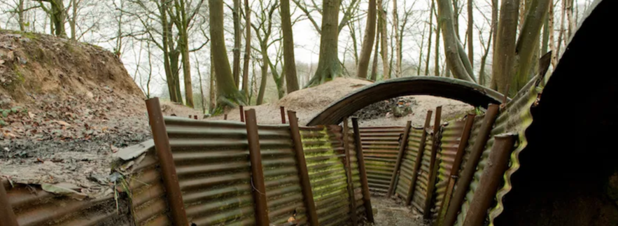

UPCOMING EVENTS
Living History Weekend in Newville, PA
Join us for an unforgettable Living History weekend at the famous Newville site, where you'll be able to step back in time and revisit the Great War era.
Learn More/RSVP
"Tanks of The Great War" Exhibit in Houston, TX
From the French Renault-FT's to the British Mark tanks (and more!). Come and experience the mighty tanks of WWI in action! Just as they would have been over a hundred years ago.
Learn More/RSVP
"The War To End All Wars" Sabaton Movie Screenings
"The War To End All Wars" takes you on a exciting, heavy metal journey throughout key events and battles of WWI. With Swedish Metal giants, SABATON, taking you along for the ride..
Learn More/RSVP
TOURS
Tour The Trenches - Guided Tours
Walk through and tour the intricate systems of preserved trenches that were built during the Great War. Experience "trench-life" first hand, with the help of our knowledgeable, friendly tour guides as they lead you on this unforgettable experience.
See Available Tours..
Walking Through The Western Front - Guided Tours
Follow the footsteps of the soldiers long-gone, who once ran through shell-laden battlefields and towards danger. Hear first-hand accounts of the combatants themselves and a recount of the several battles and offensives that occured here.
See Available Tours..
Tannenberg Trek - Guided Tours
Explore the scenic, picturesque landscapes of the Eastern Front in Tannenberg (now a part of modern day Poland) and visit key battle locations and war memorials dedicated to the fallen soldiers of the war.
See Available Tours..